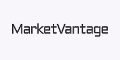
Market Vantage
Lead web developer & organic growth engineer
I lead web development, SEO, AI Engine Optimization (GEO), GA4 attribution analytics, and AI workflow automation for B2B clients.
A running directory of the companies, schools, agencies, and teams I've supported across web development, SEO, GEO/AEO, brand systems, analytics, education, and AI workflows.

Lead web developer & organic growth engineer
I lead web development, SEO, AI Engine Optimization (GEO), GA4 attribution analytics, and AI workflow automation for B2B clients.
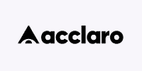
Webflow rebuild, SEO, landing pages & video
Through Market Vantage, I project-managed the team and led Acclaro's full Webflow rebuild from plan to launch, along with SEO, landing pages, ad creatives, and social video clips edited from webinars.
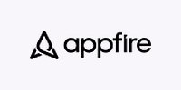
Ad creative & marketplace SEO
Through Market Vantage, I led visual ad creative initiatives and ran SEO across Appfire's Atlassian Marketplace app listings and main marketing site.
SEO, content optimization & keywords
I supported Camunda primarily through SEO, creating and optimizing page content and monitoring keyword performance.
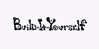
Operations, Build-It-Blocks & workshops
I started teaching Blender 3D workshops alongside MIT undergraduates, later served as operations manager rebuilding Build-It-Blocks and training interns, and helped co-host an online session at MIT's Universal Village.
Valedictorian alumni & advisory board member
I studied electronics in the engineering cluster at Greater Lawrence Technical School, graduated valedictorian in 2008, led a peer 3D graphics class, and later returned to serve on the school's advisory board.
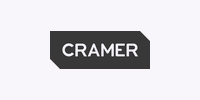
SEO, AEO/GEO, blog publishing & ad creatives
Through Market Vantage, I led keyword strategy, SEO, and early AEO/GEO work for Cramer, while directly creating, editing, and publishing blog pages alongside ad banners and creatives.
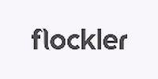
Paid advertising & ad creatives
Through Market Vantage, I supported Flockler's paid advertising efforts by designing ad creatives and reviewing landing page details.
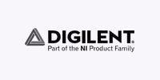
SEO, keyword strategy & reporting
Through Market Vantage, I focused purely on SEO for Digilent, managing keyword strategy, optimization, and ongoing progress reporting.
Ad creatives & conversion tracking
Through Market Vantage, I supported L2L primarily with ad creatives alongside conversion tracking work.
SEO, ad creatives & HubSpot pages
Through Market Vantage, I contributed to Relay Commerce's SEO and ad creatives, and occasionally assisted with HubSpot landing pages.
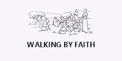
WordPress LMS & RTL Farsi localization
Through Market Vantage, I helped build a WordPress learning management system (LMS) for this Woburn church's scripture-study platform and created a second localized version in right-to-left Farsi.
Digital & web support via Market Vantage
Through Market Vantage, I supported Pathway Law, a Massachusetts estate planning and long-term care law firm, with digital and website initiatives.
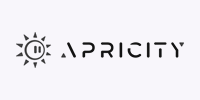
HubSpot CMS custom theme & team leadership
Through Market Vantage, I led the team through building a new website for Apricity Robotics on HubSpot CMS with a custom theme.
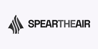
WordPress site, strategy, deployment & training
In partnership with Web Leads For You Marketing, I led the entire WordPress website project for Spear the Air, managing the account, strategy, development, deployment, and internal team training.
Custom transportation booking & payment platform
I built a custom pre-AI-era transportation booking and dispatch platform from scratch, integrating Google Maps routing with dynamic toll and time-of-day pricing, relational database ride persistence, and PayPal authorization, capture, tipping, and IPN workflows.
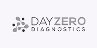
New-hire onboarding materials
I helped design and produce onboarding materials and collateral to help bring new hires up to speed.
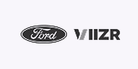
Paid advertising & ad creatives
Through Market Vantage, I designed ad creatives supporting campaigns for Ford VIIZR.
Online reputation management
During my Image Lucidity years, I managed ongoing review monitoring, response strategy, and local listing accuracy for Baymont Inn & Suites Celebration.
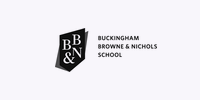
Summer camp & after-school workshops
Through Build-It-Yourself, I helped lead a variety of hands-on technology and creative workshops across their summer camps and after-school programs.
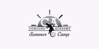
Summer camp workshops
Through Build-It-Yourself, I helped lead hands-on technology and creative workshops for their summer camp program.
Summer camp workshops
Through Build-It-Yourself, I helped lead hands-on technology and creative workshops for their summer camp program.
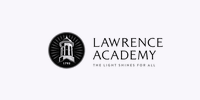
Summer camp workshops
Through Build-It-Yourself, I helped lead hands-on technology and creative workshops for their summer camps.
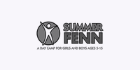
Blender 3D & Photoshop workshops
Contracted independently, I created my own Blender 3D curriculum guiding students to build interactive 3D games using physics engines, and also led their Photoshop workshop.
In-class STEAM & smart city projects
Through Build-It-Yourself, I helped teach in-class projects at this private school in Mexico, including regional studies and a smart city project focused on better urban design.
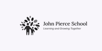
After-school STEAM workshops
Through Build-It-Yourself, I helped lead hands-on after-school creative and technology projects with students.
After-school STEAM workshops
Through Build-It-Yourself, I helped lead hands-on after-school creative and technology projects with students.
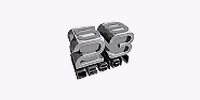
Product visualizations & 3D space animation
I supported this industrial design firm with product visualizations and created custom 3D space animations for an indie film project they contracted on.
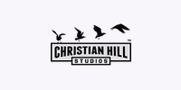
Web design & development partner
During my Image Lucidity years, I partnered with Christian Hill Studios as their web design and development specialist alongside photography and creative talent.
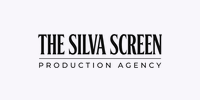
Websites, motion graphics & 3D animation
I built websites to bring their independent movies and series to wider audiences alongside YouTube, and created motion graphics and 3D animations for multiple commercials.
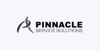
Electronics repair & salvaged inventory systems
I started as a TV repair technician, moved into managing reclaimed inventory, and built an internal Microsoft Access parts-and-brands search system.
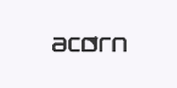
SEO & website updates
Through Market Vantage, I supported Acorn with SEO work and ongoing edits to their website.
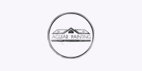
Brand identity & logo design
I helped establish Aguiar Painting's visual brand identity and designed their logo.
Logo & brand concept design
I developed exploratory logo concepts and early visual design directions to help inform their branding process.
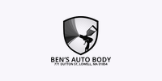
Brand identity, logo & full website
I created Ben's Auto Body's logo and built their first full website from the ground up.
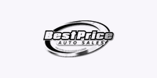
Commercial motion graphics & 3D animation
Working through The Silva Screen, I created motion graphics and 3D animations for their commercial.
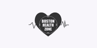
Brand identity & logo design
I created the logo and foundational branding for Boston Health Zone.
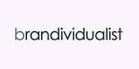
Multi-iteration website development
I built two iterations of Brandividualist's website for seasoned agency branding specialist Christopher Payne-Taylor.
Shopify e-commerce build & management
Through Image Lucidity, I built and managed a Shopify storefront to help bring their medical product offerings to market.
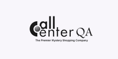
Web builds, PHP/MySQL tools & 3D commercial
I first created 3D animations for their commercial through The Silva Screen, then retained them directly to build and later rebuild their website along with hand-coded PHP and MySQL internal tooling.
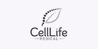
Medical practice website build
I built the website for CellLife Medical, Dr. Fabian Proano's regenerative medicine practice in Torrance, California, focused on non-surgical relief for joint arthritis, back pain, and spinal disc conditions.
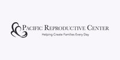
Websites & Chinese market localization
Through Image Lucidity, I built two websites for this Torrance, California IVF and fertility clinic, including a localized Chinese-language site prepared for international patients and reviewed with a language specialist.
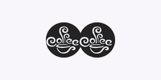
WooCommerce ordering, visibility & ongoing care
A favorite long-term Image Lucidity client, I managed their web presence, visibility, and a complex WooCommerce setup supporting pickup, local delivery, shipping, and gift cards.
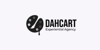
Websites, event promos & creative assets
Over several years, I supported DAHCART with websites, event promotional campaigns, flyers, and a wide range of marketing assets.
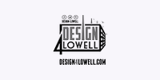
Featured web designer
I was featured as a web designer in Design 4 Lowell magazine.
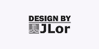
Website design & development
I designed and built the website for Design by JLor.
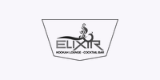
Commercial animations
Working through The Silva Screen, I created animations for Elixir Hookah Lounge's commercials.
Web updates, print design & children's book
Through Image Lucidity, I supported Fright Kingdom with web page updates and ticket design, and collaborated with illustrator Ahna Gell to write and bring a children's book to their venue.
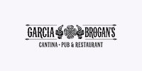
Multi-location restaurant website
I helped build the website for Garcia Brogan's across their multiple restaurant locations, including menus and table reservation features.
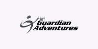
Day camp instructor & storytelling
As a summer day camp instructor immersed in interactive storytelling and live-action roleplay, I sharpened the narrative instincts I still draw on for brand and marketing storytelling.
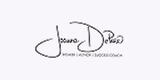
Personal brand identity
I helped develop the branding and visual identity for speaker, educator, and Top Notch Scholars founder Joanna de Peña.
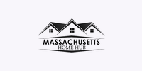
Brand identity & logo design
I designed the logo and visual branding for Massachusetts Home Hub.
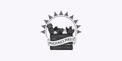
Brand design, labels & product visualization
In collaboration with Ahna Gell, I worked on branding, food packaging labels, and product visualizations for this Haitian pikliz condiment brand.
Brand, website & creative materials
I supported Paint for Peace across their branding, website, and creative collateral.
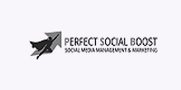
Brand, 3D mascot, website & payment portal
Through Image Lucidity, I built the brand, website, and payment portal for this social media marketing agency, including bringing a 3D brand character to life from Ahna Gell's initial sketches.
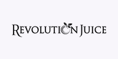
Websites & online ordering integration
I built multiple iterations of the website for this health-focused Boston smoothie bar and integrated their online ordering platform.
Shopify e-commerce store
I built a Shopify e-commerce storefront for this Hampton Beach area consignment boutique.
Brand identity & logo design
I created the logo and visual branding for SoundGuru International.
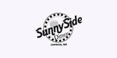
Commercial production appearance
I appeared on camera as a background extra in Sunnyside Diner's commercials produced by The Silva Screen.
Logo design & initial website
For filmmaker and internet personality Daryl Silva (The Silva Screen), I set up the initial website and created The Boston Dad logo still used today.
Advisory board, web design, PSA & events
I served on the advisory board during the Top Notch Network era (before its pivot to the youth leadership nonprofit Top Notch Scholars), led design and web coordination with an overseas development team, supported the Patriots Alumni golf tournament at Merrimack Valley Golf Club, and helped with a Massachusetts dropout-prevention PSA featuring Tony Collins, Walter McCarty, and state leaders.
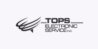
Internal inventory & Access database tools
Before the company became Pinnacle, I built internal Microsoft Access database tools to support electronics inventory tracking and operations.
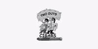
Commercial 3D animation & motion graphics
Working through The Silva Screen, I created 3D animations and motion graphics for Two Guys Smoke Shop's commercial.
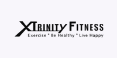
Website, online ordering & memberships
I built and managed XTrinity Fitness's website, including online ordering, membership functionality, and ongoing site updates.
Let's connect to talk shop and compare notes, or work together through Market Vantage on what you're building.